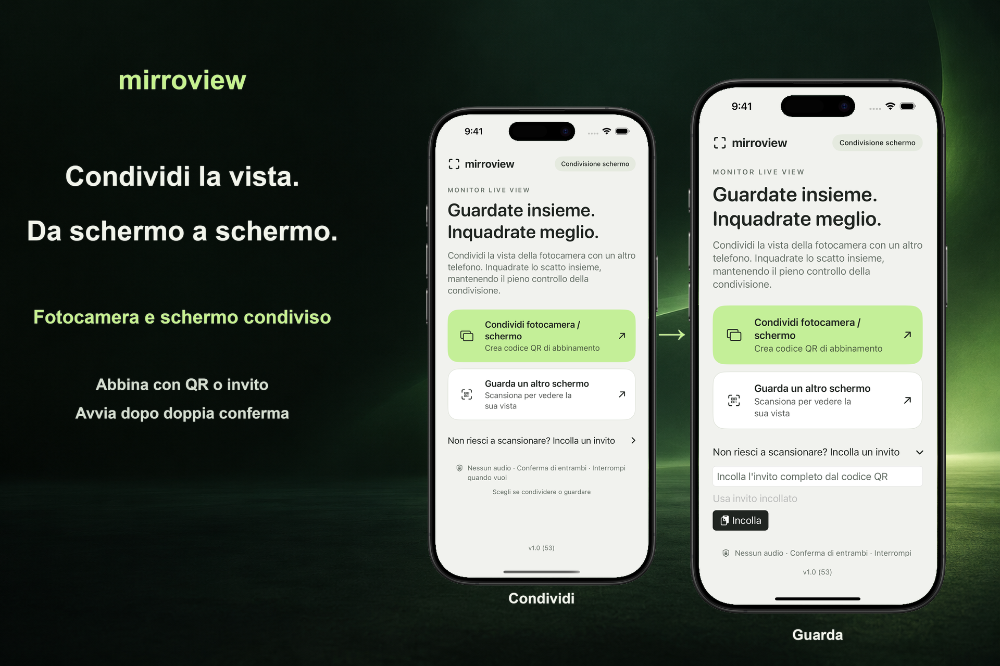

Abbina di persona
Una persona condivide un invito. L'altra scansiona il codice QR o incolla l'invito ed entrambe confermano la sessione.
Una vista condivisa, per scelta
Condividi lo schermo del tuo iPhone o iPad con qualcuno vicino a te. Entrambi i dispositivi richiedono iOS o iPadOS 17 o versioni successive. Entrambe le persone confermano la sessione e chi invia approva l'acquisizione dello schermo tramite l'interfaccia di sistema.

Una persona condivide un invito. L'altra scansiona il codice QR o incolla l'invito ed entrambe confermano la sessione.
Dalla schermata iniziale si avvia la condivisione dell'intero schermo. Dopo l'autorizzazione di iOS o iPadOS, chi invia può aprire un'altra app, inclusa Fotocamera, per mostrarne lo schermo.
Termina la sessione da uno qualsiasi dei due dispositivi. Per la prima connessione, usa la stessa rete Wi-Fi locale raggiungibile. La disponibilità della connessione nelle vicinanze dipende dai dispositivi, dal supporto di sistema e dalle condizioni wireless.
La condivisione dello schermo può mostrare notifiche e altre informazioni private. L'app non trasmette audio. Chi guarda può comunque acquisire uno screenshot, registrare il proprio schermo o fotografare ciò che vede. Alcuni contenuti protetti potrebbero apparire oscurati.